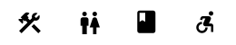

Points of Interest (POIs) are notable locations on the map, like classrooms, washrooms, and eateries.
Built-in POIs can be found on all maps.
In addition to these built-in POIs, you can also create your own custom POIs.
Any POI can be marked as favorite for easy access.